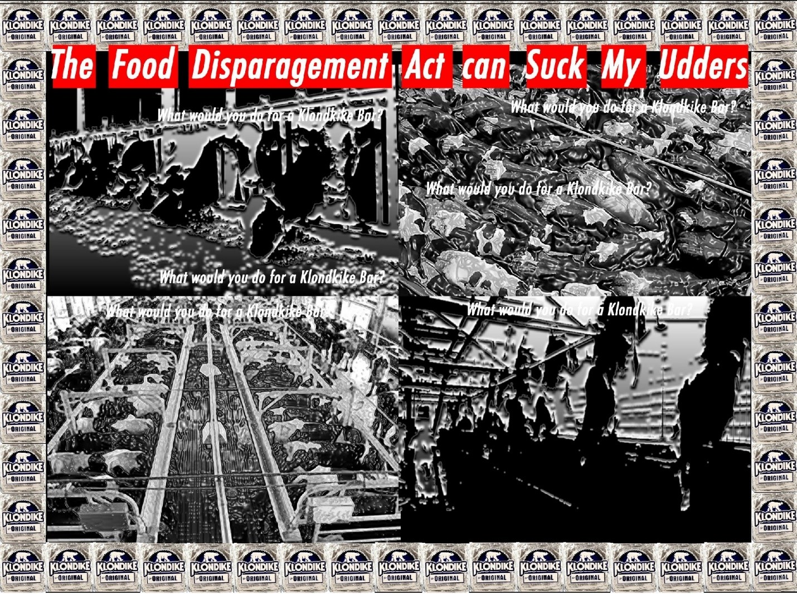

Sometimes I wonder if reality exists
Information is inversely correlated with__meaning
I want to believe in something
I thought that something could be objectivity
But I recently learned that science
Entails trained value judgements
There is no getting around our biases
One can only accept them and try to
Understand and thus use them
Is understanding always a means to an end?
Reading pretentious theory doesn't_help me
If we never leave the ivory tower
Then what have we accomplished?
Absolutely nothing...
And all the commies
Are part of the bourgeoisie...
Trickle down knowledge production
Is just as silly
As trickle down economics
And academia thinks it's subversive...
Hah!
We're all just trying to
Impress our contemporaries
Theory is just a diversion
For the privileged caste
the only reason
i'm an accelerationist
is that i don't believe that
a global revolution
can be organized.
i got called out
for my pessimism/
under the guise of realism/
that tends to render/
the left
immobile
...
i guess i'm more
of a kantian
than i care to admit
i'd rather people
die under capitalism
than be killed in
a revolution
i guess i do believe
in the act-omission distinction

All representation is flawed
Translation is definitionally
impossible
Be disembodied
/
If things are too conceptual
People don't pay attention
The image is alluring
/
Is this natural or virtual?
Does it matter?
Libertarians r rlly clueless lmao
Free will doesn't exist...duh
I'm the baddddd guyyyyyyyyyyy DUH!
Lol u silly gurl. evil doesn't exist. evil presupposes choice..........
/
Sociology taught me
To be forgiving.
It also taught me
To be cynical.
The professor apologized after every class...........................................................................................................................................
/
my lyft driver is a bit of a social darwinist.
he told me, "i don't talk to poor people. it's just so much harder to talk to people below you" .....................................................................................................................
he told me to "hang around people who have things that you want"
that's why he only hangs around people who have money
he told me how to get rich off of selling stuff online
"you don't even have to go to school anymore" he said
/
Come see a more beautiful (but no more constructive) version of this

i'm an accelerationist
is that i don't believe that
a global revolution
can be organized.
i got called out
for my pessimism/
under the guise of realism/
that tends to render/
the left
immobile
...
i guess i'm more
of a kantian
than i care to admit
i'd rather people
die under capitalism
than be killed in
a revolution
i guess i do believe
in the act-omission distinction